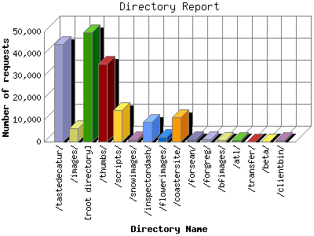

The Directory Report analyzes accesses to this web site's directories. This information can be useful in determining the most requested areas.
This report shows results with at least 0.010000 percent of the total bytes. This report is sorted by amount of bytes transferred.

| Directory Name | Number of requests | Percentage of the bytes | |
|---|---|---|---|
| 1. | /tastedecatur/ | 44,435 | 28.73% |
| 2. | /images/ | 5,935 | 22.11% |
| 3. | [root directory] | 49,546 | 14.37% |
| 4. | /thumbs/ | 35,391 | 12.84% |
| 5. | /scripts/ | 14,386 | 9.73% |
| 6. | /snowimages/ | 1,066 | 2.27% |
| 7. | /inspectordash/ | 9,071 | 2.27% |
| 8. | /flowerimages/ | 2,064 | 1.86% |
| 9. | /coastersite/ | 11,156 | 1.83% |
| 10. | /forsean/ | 1,172 | 1.08% |
| 11. | /forgreg/ | 1,002 | 0.87% |
| 12. | /bfimages/ | 805 | 0.83% |
| 13. | /atl/ | 616 | 0.64% |
| 14. | /transfer/ | 4 | 0.36% |
| 15. | /beta/ | 159 | 0.13% |
| 16. | /clientbin/ | 663 | 0.09% |
This report was generated on April 23, 2011 21:02.
Report time frame January 4, 2009 02:40 to April 23, 2011 23:20.
| Web statistics report produced by: analog 5.1 / Report Magic 2.21 |